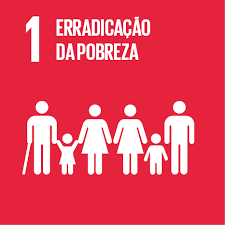

Apesar da fome no Brasil ter diminuído em mais da metade entre 2001 e 2010, ela voltou a se expandir pelo país, como mostram os dados mais recentes do IBGE de 2018. São 10,3 milhões de brasileiros e brasileiras que passam fome. A pandemia do coronavírus agravou ainda mais este cenário e muitas pessoas dependem da solidariedade para sobreviver.
A pandemia do coronavírus segue cada vez mais grave, impactando vidas e aumentando desigualdades. O número de pessoas em situação de extrema pobreza dobrou no Brasil em 2020, atingindo 12,8% da população, segundo a Fundação Getúlio Vargas.
Impactada pelo aumento da extrema pobreza no país, a Ação da Cidadania junto com sua grande rede de comitês e voluntários, convoca mais uma vez a sociedade civil e o setor privado para levar alimentos aos mais atingidos pela crise da pandemia da Covid-19 e pelo fim do auxílio emergencial.
Abaixo tem algumas instituições criada para ajudar as pessoas em situação de fome:
Dia das Boas Ações
O Dia das Boas Ações (DBA) é um movimento mundial de voluntariado que anualmente convoca pessoas, ONGs e empresas a participar da transformação da sociedade através de boas ações. Neste ano, porém, o DBA foca em uma campanha virtual na luta contra a fome com ações de arrecadação de alimentos não perecíveis em prédios, ONGs e escritórios. Tudo através de pontos de coleta, respeitando as normas de distanciamento e segurança por conta da COVID-19.
Além disso, o Atados também abrirá uma sessão de doação no site do DBA, através do Mercado Pago para a arrecadação de dinheiro para a compra de cestas básicas que serão destinados às ONGs da rede.
Tem Gente Com Fome
A Coalizão Negra Por Direitos, em parceria com a Anistia Internacional, Oxfam Brasil, Redes da Maré, Ação Brasileira de Combate às Desigualdades, 342 Artes, Nossas – Rede de Ativismo, Instituto Ethos, Orgânico Solidário e Grupo Prerrô mobilizam suas forças para lançar a campanha de financiamento coletivo para arrecadar fundos para ações emergenciais de enfrentamento à fome, à miséria e à violência na pandemia de Covid-19.
A campanha “Tem Gente com Fome” pretende doar cestas básicas para 223 mil famílias em todo o país. Para isso, os organizadores da iniciativa precisam arrecadar R$ 133 milhões, através do site da ação.
Chega de Fome
A Gastromotiva – a ONG que promove ações de impacto social por meio da gastronomia em São Paulo, Rio de Janeiro e Curitiba, assim como outras organizações está com dificuldades para continuar a prestar serviços para diferentes comunidades. Com a urgência da situação e observando a população das favelas, onde 68% dos moradores não têm dinheiro para comprar comida (Data Favela, 2021), a Gastromotiva lança a campanha Chega de Fome para arrecadar fundos para a causa.
O valor arrecadado, via pix ou da plataforma online de doação acessada pelo site da ONG, será aplicado nas Cozinhas Solidárias, projeto que produz quentinhas e distribui para quem está sem comida, e para o Banco de Alimentos, onde a Gastromotiva recebe doações de alimentos e os repassa para outros projetos, organizações e aparelhos socioassistenciais parceiros, como o Covid Sem Fome e o Projeto Ruas, ambos da região central do Rio de Janeiro.
Sobre o MINRL:
O MINRYL é um grupo feminino com projeto de conscientizar e ajudar nos Objetivos de Desenvolvimento Sustentável da ONU atravéz do uso da tecnologia para auxiliar e ter amplo alcance.
O MINRYL apoia os Objetivos de Desenvolvimento Sustentável da ONU:




{kind=link}